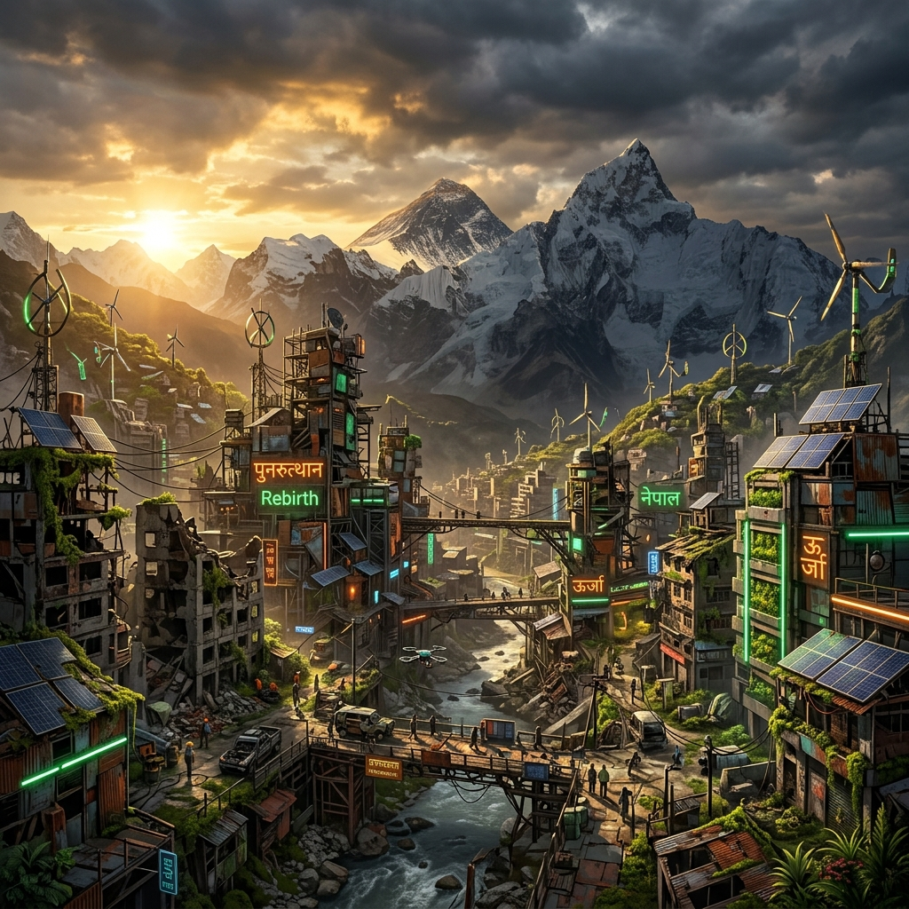
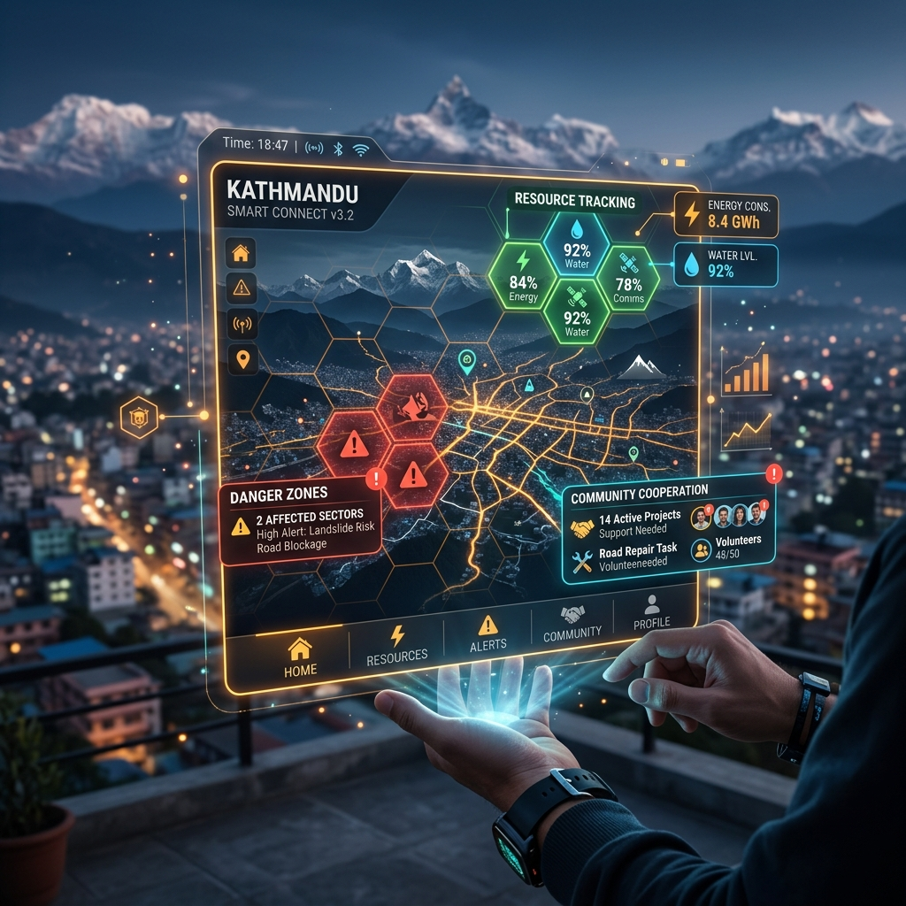
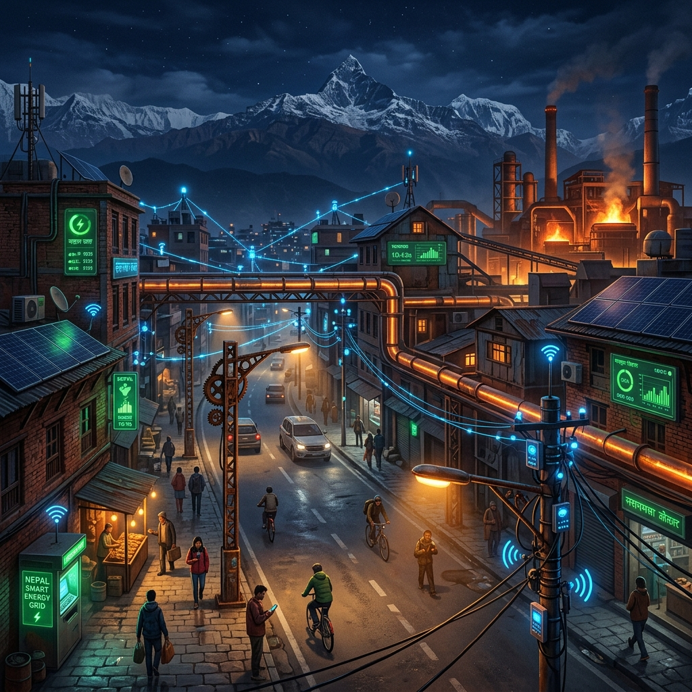
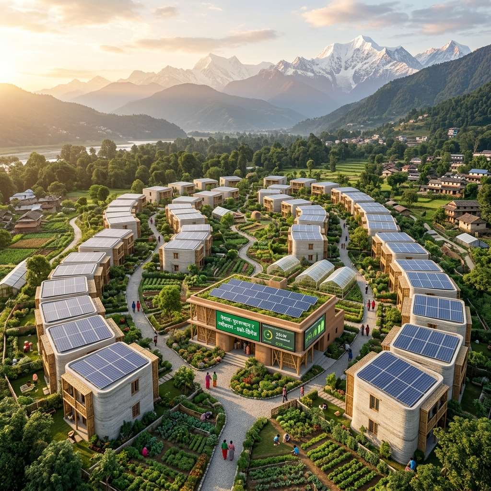

Una ciudad que renace de los escombros de la guerra, transformando chatarra en futuro.
Debido a una guerra ocurrida hace mucho tiempo entre China y Bután — los países más cercanos a Nepal — la ciudad ha quedado cubierta de residuos contaminantes de armas y bombas, dificultando la vida en este lugar.
Al principio la población era mucho mayor, pero las guerras impidieron abastecerse de recursos y tener una vida digna. Mucha gente emigró. Hoy somos 1 millón de personas, a la espera de que la ciudad se recupere.
Medidas de sostenibilidad para restaurar el ecosistema dañado por la guerra.
Sistema mixto con transición hacia renovables. Paneles solares sobre metal reciclado, micro-turbinas eólicas y biomasa.
Transporte público eléctrico solar. Carriles bici de metal reciclado. Rutas seguras optimizadas con sensores.
Plantas de purificación que filtran metales pesados de la guerra. Recogida de lluvia y red de distribución IoT.
La chatarra bélica se convierte en recurso: fundición y reciclaje para viviendas e infraestructura. Biorremediación de suelos.
Parques y huertos urbanos en zonas descontaminadas. Jardines verticales y corredores verdes entre barrios.
ODS 7: Energía asequible · ODS 11: Ciudades sostenibles · ODS 13: Acción por el clima. Reducción de emisiones y suelos limpios.
Smart mobility, plataformas ciudadanas, energía inteligente IoT, datos abiertos y ecodiseño tecnológico.
App con red estilo panal de abeja donde todos los ciudadanos cooperan. Gestión de recursos de supervivencia en tiempo real: alimento, agua potable, mejores rutas evitando chatarra. Sistema Big Data con trueques entre habitantes.
Detectan polvo de metales en el aire producido por residuos de bombas y avisan vía app.
Avisan de posibles derrumbamientos de montañas de chatarra mediante detección de temblores.

Mapa de Limpieza: Los ciudadanos suben fotos de zonas con chatarra. El sistema avisa a equipos de recogida y el ciudadano gana "puntos de cooperación" canjeables por comida, ropa y sanidad.
Presupuesto Participativo: Una vez al mes se vota digitalmente en qué usar el metal reciclado: mejorar hospitales, construir casas o crear sensores.
Iluminación por presencia: Farolas de metal reciclado que solo se encienden al detectar personas.
Red de Calor Residual: Sensores en fundiciones redirigen calor sobrante a hogares fríos mediante tuberías inteligentes.
Mantenimiento Predictivo: Sensores avisan antes de que una máquina se rompa.

Datos Abiertos: Toda la información de sensores, calidad del aire, niveles de agua y recursos se publica en tiempo real para que cualquier ciudadano o investigador pueda consultarla.
Ecodiseño Tecnológico: Todos los dispositivos de la ciudad (sensores, farolas, paneles) están fabricados con materiales reciclados de la chatarra bélica, siguiendo principios de economía circular y mínimo impacto ambiental.
| ODS | Nombre | Cómo lo trabajamos | Área |
|---|---|---|---|
| 4 | Educación de Calidad | Formación técnica, educación híbrida 80% sostenibilidad | Social |
| 5 | Igualdad de Género | Plataforma comercio justo, transparencia salarial | Social |
| 7 | Energía Asequible | Energía mixta → renovable, solar y eólica reciclada | Ambiente |
| 8 | Trabajo Decente | Empleos verdes, cooperativas, reciclaje | Social |
| 9 | Innovación | IoT, sensores, app Steal-Connection, WiFi solar | Tecnología |
| 10 | Reducción Desigualdades | Centros digitales, dispositivos reciclados, inclusión | Social |
| 11 | Ciudades Sostenibles | Vivienda antisísmica, zonas verdes, movilidad limpia | Ambiente |
| 13 | Acción por el Clima | Descontaminación, biorremediación, economía circular | Ambiente |
Dimensión Social
Vivienda, igualdad, educación, empleo e inclusión digital.

Diseño antisísmico inteligente
Ubicada cerca del Himalaya, la ciudad tiene alto riesgo sísmico. Usamos impresión 3D con hormigón reciclado de escombros y refuerzos de bambú tratado. Cada edificio tiene un Gemelo Digital que monitoriza la salud estructural.
Igualdad
Coworking y guarderías en mercados tradicionales. Plataforma de comercio justo digital para mujeres nepalíes. Transparencia salarial.
Educación
Formación técnica en renovables y robótica. Educación híbrida en centros comunitarios. 80% enfocada en sostenibilidad.
Empleo
Reciclaje de contaminantes, energías renovables, agricultura urbana. Cooperativas locales para la reconstrucción.
Inclusión Digital
WiFi solar comunitario. Centros digitales en barrios vulnerables. Dispositivos reciclados para estudiantes.